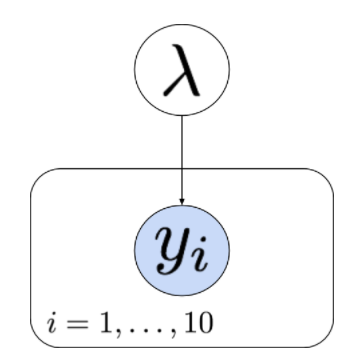
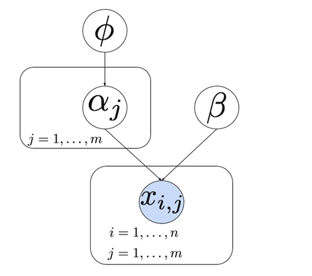

What major challenge do we face with both of the models introduced in non-conjugate models?
⚡ CORRECT We have the posterior distribution up to a normalizing constant, but we are unable to integrate it to obtain important quantities, such as the posterior mean or probability intervals. In low dimensional problems with only a few parameters, we can resort to numerical methods for integration, but this solution only works for a narrow set of models.
☐ WRONG The expression derived is only an approximation to the posterior. We actually know the exact posterior distributions up to a normalizing constant, which is enough to uniquely identify them.
☐ WRONG The posterior distribution derived is not a proper probability distribution with a finite integral. Whenever we use a proper prior with a proper model (which is the case here), we will have a proper posterior distribution.
☐ WRONG We have the full posterior distribution, no methods exist for computing important quantities, such as the posterior mean or probability intervals. In these examples, we don’t even have the full expression for the posterior distribution.
Forecasters often use simulations (usually based on a probability model) to approximate the probability of something they are trying to predict (for example, see https://fivethirtyeight.com/). How do they use the simulations to obtain the forecast probability?
⚡ CORRECT They simulate the system under study many times and count the fraction of times the event of interest occurs.
☐ WRONG They simulate the system under study once. If the event of interest occurs in that simulation, they forecast that it will occur. Monte Carlo estimation relies on taking many samples.
☐ WRONG They calculate the probability directly by integrating the probabilistic model. They then run one simulation, inputting the calculated probability. If the event occurs in the simulation, they forecast that it will occur. Monte Carlo estimation relies on taking many samples.
☐ WRONG They calculate the probability directly within each simulation by integrating the probabilistic model. They then average these probabilities across many simulations. This is a viable approach. However, there is a more basic and common way to use Monte Carlo samples to approximate a probability.
What is the easiest way to increase accuracy of a Monte Carlo estimate?
☐ WRONG Discard samples that appear to be outliers. This practice changes the properties of the sampler, and is no longer guaranteed to produce a reliable answer.
☐ WRONG If sampling multiple variables, keep only the samples for the variable of interest. This is a way to get draws from the marginal distribution of the variable of interest, but it doesn’t increase accuracy.
☐ WRONG Change the random number generator seed. Rejecting simulations until they appear how you want introduces potentially invalidating bias.
⚡ CORRECT Increase the number of samples simulated. There are other ways to set up Monte Carlo simulations with smaller variance (such as “Rao-Blackwellization”), but they usually require more effort.
Which objective of statistical modeling is best illustrated by the following example?
You fit a linear regression of monthly stock values for your company. You use the estimates and recent stock history to calculate a forecast of the stock’s value for the next three months.
☐ WRONG Quantify uncertainty
☐ WRONG Inference
☐ WRONG Hypothesis testing
⚡ CORRECT Prediction Forecasting is another word for predicting, especially with time series data.
Which objective of statistical modeling is best illustrated by the following example?
A biologist proposes a treatment to decrease genetic variation in plant size. She conducts an experiment and asks you (the statistician) to analyze the data to conclude whether a 10% decrease in variation has occurred.
☐ WRONG Quantify uncertainty
☐ WRONG Inference
⚡ CORRECT Hypothesis testing The scientist has a specific hypothesis in mind and asks you to evaluate the evidence for or against it.
☐ WRONG Prediction
Which objective of statistical modeling is best illustrated by the following example?
The same biologist form the previous question asks you how many experiments would be necessary to have a 95% chance at detecting a 10% decrease in plant variation.
⚡ CORRECT Quantify uncertainty Most estimates from data come with uncertainty. Statisticians are often called upon to evaluate how much we can trust the results.
☐ WRONG Inference
☐ WRONG Hypothesis testing
☐ WRONG Prediction
Which of the following scenarios best illustrates the statistical modeling objective of inference?
☐ WRONG A natural language processing algorithm analyzes the first four words of a sentence and provides words to complete the sentence.
☐ WRONG A venture capitalist uses data about several companies to build a model and makes recommendations about which company to invest in next based on growth forecasts.
⚡ CORRECT A social scientist collects data and detects positive correlation between sleep deprivation and traffic accidents. Here the social scientist made an inference about the relationship between two variables.
☐ WRONG A model inputs academic performance of 1000 students and predicts which student will be valedictorian after another year of school.
Which step in the statistical modeling cycle was not followed in the following scenario?
Susan gathers data recording heights of children and fits a linear regression predicting height from age. To her surprise, the model does not predict well the heights for ages 14-17 (because the growth rate changes with age), both for children included in the original data as well as other children outside the model training data.
☐ WRONG Plan and properly collect relevant data
☐ WRONG Fit the model The scenario does imply that the model was fit. However, it is possible that surprising results could stem from problems fitting the model.
☐ WRONG Use the model Since Susan was predicting heights for children outside the original data set, she was using the model.
⚡ CORRECT Explore the data This is also an issue of understanding the problem. A linear model is inappropriate in this scenario because human growth is not linear. A scatter plot of the data would quickly reveal this nonlinear relationship.
Which of the following is a possible consequence of failure to plan and properly collect relevant data?
⚡ CORRECT Your analysis may produce incomplete or misleading results. Unless there are fundamental problems with the data (e.g., invalid numbers, etc.) statistical models will fit to any data and return results. It is the statistician’s job to make sure the data properly measure what you intend to measure, that the results are valid, and to interpret them.
☐ WRONG You may not be able to visually explore the data.
☐ WRONG You will not produce enough data to make conclusions with a sufficient degree of confidence.
☐ WRONG Your selected model will not be able to fit the data.
For Questions 6 and 7, consider the following:
Xie operates a bakery and wants to use a statistical model to determine how many loaves of bread he should bake each day in preparation for weekday lunch hours. He decides to fit a Poisson model to count the demand for bread. He selects two weeks which have typical business, and for those two weeks, counts how many loaves are sold during the lunch hour each day. He fits the model, which estimates that the daily demand averages 22.3 loaves.
Over the next month, Xie bakes 23 loaves each day, but is disappointed to find that on most days he has excess bread and on a few days (usually Mondays), he runs out of loaves early.
Which of the following steps of the modeling process did Xie skip?
☐ WRONG Understand the problem
☐ WRONG Postulate a model
☐ WRONG Fit the model
⚡ CORRECT Check the model and iterate Xie skipped directly from collecting data and fitting the model to using the model for future production. He skipped the steps of exploring the data and checking to see if the model fit adequately. Because the model was lacking, his use of the model produced less desirable results.
☐ WRONG Use the model
What might you recommend Xie do next to fix this omission and improve his predictive performance?
☐ WRONG Abandon his statistical modeling initiative.
☐ WRONG Collect three more weeks of data from his bakery and other bakeries throughout the city. Re-fit the same model to the extra data and follow the results based on more data. Collecting more data is probably a good idea, unless the data are not relevant. Data from other bakeries are fairly relevant, but demand may not be the same as at Xie’s bakery. The problem appears to be with the model, not with the data.
⚡ CORRECT Plot daily demand and model predictions against the day of the week to check for patterns that may account for the extra variability. Fit and check a new model which accounts for this. Higher demand on Mondays suggests that the time of the week may help explain some of the day-to-day variability in demand. This could be incorporated by fitting different Poisson models for different weekdays, or a Poisson regression incorporating explanatory variables (we will explore these in Lesson 10).
☐ WRONG Trust the current model and continue to produce 23 loaves daily, since in the long-run average, his error is zero.
Which of the following is one major difference between the frequentist and Bayesian approach to modeling data?
☐ WRONG Frequentist models require a guess of parameter values to initialize models while Bayesian models require initial distributions for the parameters.
⚡ CORRECT Frequentists treat the unknown parameters as fixed (constant) while Bayesians treat unknown parameters as random variables. The only random variables in frequentist models are the data. The Bayesian paradigm also uses probability to describe one’s uncertainty about unknown model parameters.
☐ WRONG Frequentist models are deterministic (don’t use probability) while Bayesian models are stochastic (based on probability). Both paradigms begin with the same object: a probability model that could have generated the data.
☐ WRONG The frequentist paradigm treats the data as fixed while the Bayesian paradigm considers data to be random. In the frequentist paradigm, data is the only thing considered to be random. Bayesians build a probability model for data, and then condition on the observed data.
Suppose we have a statistical model with unknown parameter \(\theta\)θ, and we assume a normal prior \(\theta \sim \text{N}(\mu_0, \sigma_0^2)\), where \(\mu_0\) is the prior mean and \(\sigma_0^2\) is the prior variance. What does increasing \(\sigma_0^2\) say about our prior beliefs about \(\theta\)?
☐ WRONG Increasing the variance of the prior narrows the range of what we think \(\theta\) might be, indicating greater confidence in our prior mean guess \(\mu_0\).
⚡ CORRECT Increasing the variance of the prior widens the range of what we think \(\theta\) might be, indicating less confidence in our prior mean guess \(\mu_0\). This also lowers the “effective sample size” of the prior, so that the data become more influential in determining the posterior for \(\theta\).
☐ WRONG Increasing the variance of the prior narrows the range of what we think \(\theta\) might be, indicating less confidence in our prior mean guess \(\mu_0\).
☐ WRONG Increasing the variance of the prior widens the range of what we think \(\theta\) might be, indicating greater confidence in our prior mean guess \(\mu_0\).
In the lesson, we presented Bayes’ theorem for the case where parameters are continuous. What is the correct expression for the posterior distribution of \(\theta\) if it is discrete (takes on only specific values)?
⚡ CORRECT \(p(\theta_j \mid y) = \frac{ p(y \mid \theta_j) \cdot p(\theta_j) }{ \sum_j p(y \mid \theta_j) \cdot p(\theta_j) }\)
☐ WRONG \(p(\theta \mid y) = \frac{ p(y \mid \theta) \cdot p(\theta) }{ \int p(y \mid \theta) \cdot p(\theta)\, d\theta }\) This is the discrete version of Bayes’ theorem.
☐ WRONG \(p(\theta) = \int p(\theta \mid y) \cdot p(y) \, dy\)
☐ WRONG \(p(\theta) = \sum_j p(\theta \mid y_j) \cdot p(y_j)\)
For Questions 4 and 5, refer to the following scenario.
In the quiz for Lesson 1, we described Xie’s model for predicting demand for bread at his bakery. During the lunch hour on a given day, the number of orders (the response variable) follows a Poisson distribution. All days have the same mean (expected number of orders). Xie is a Bayesian, so he selects a conjugate gamma prior for the mean with shape \(3\) and rate \(1 / 15\). He collects data on Monday through Friday for two weeks.
Which of the following hierarchical models represents this scenario?
⚡ CORRECT
\(y_i \mid \lambda \overset{\text{iid}}{\sim} \text{Pois}(\lambda) \quad \text{for } i = 1, \ldots, 10,\)
\(\lambda \sim \text{Gamma}(3, 1/15)\)
The likelihood is Poisson with the same mean for all observations, called \(\lambda\) here. The mean \(\lambda\) has a gamma prior.
☐ WRONG
\(y_i \mid \lambda_i \overset{\text{ind}}{\sim} \text{Pois}(\lambda_i) \quad \text{for } i = 1, \ldots, 10,\)
\(\lambda_i \mid \alpha \sim \text{Gamma}(\alpha, 1/15)\)
\(\alpha \sim \text{Gamma}(3.0, 1.0)\)
☐ WRONG
\(y_i \mid \lambda \overset{\text{iid}}{\sim} \text{Pois} ( \lambda ) \quad \text{for } i=1,\ldots,10,\)
\(\lambda \mid \mu \sim \text{Gamma}(\mu, 1/15)\)
\(\mu \sim \text{N}(3, 1.0^2)\)
☐ WRONG
\(y_i \mid \mu \overset{\text{iid}}{\sim} \text{N} ( \mu, 1.0^2 ) \quad \text{for } i=1,\ldots,10,\)
\(\mu \sim \text{N}(3, 15^2)\)
Which of the following graphical depictions represents the model from Xie’s scenario?

The observed data variables each depend on the mean demand.
Graphical representations of models generally do not identify the distributions of the variables (nodes), but they do reveal the structure of dependence among the variables.
Identify which of the following hierarchical models is depicted in the graphical representation below.

⚡ CORRECT
\(x_{i,j} \mid \alpha_j, \beta \overset{\text{ind}}{\sim} \text{Gamma}(\alpha_j, \beta), \quad i = 1,\ldots,n, \quad j=1,\ldots,m\)
\(\beta \sim \text{Exp}(b_0)\)
\(\alpha_j \mid \phi \overset{\text{iid}}{\sim} \text{Exp} (\phi), \quad j=1,\ldots,m\)
\(\phi \sim \text{Exp}(r_0)\)
\(x_{i,j}\) depends on \(\alpha_j\) and \(\beta\). \(\beta\) doesn’t depend on anything. \(\alpha_j\) depends on \(\phi\).
Notice that the \(x_{i,j}\) variables are independent (denoted \(\overset{\text{ind}}{\sim}\)) rather than independent and identically distributed (\(\overset{\text{iid}}{\sim}\)) because the distribution of \(x_{i,j}\) changes with the index \(j\) (they have different shape parameters \(\alpha_j\)).
☐ WRONG
\(x_{i,j} \mid \alpha_j, \beta \overset{\text{ind}}{\sim} \text{Gamma}(\alpha_j, \beta), \quad i = 1,\ldots,n, \quad j=1,\ldots,m\)
\(\beta \sim \text{Exp}(b_0)\)
\(\alpha_j \sim \text{Exp} (a_0), \quad j=1,\ldots,m\)
\(\phi \sim \text{Exp}(r_0)\)
☐ WRONG
\(x_{i,j} \mid \alpha_i, \beta_j \overset{\text{ind}}{\sim} \text{Gamma}(\alpha_i, \beta_j), \quad i = 1,\ldots,n, \quad j=1,\ldots,m\)
\(\beta_j \mid \phi \overset{\text{iid}}{\sim} \text{Exp}(\phi), \quad j=1,\ldots,m\)
\(\alpha_i \mid \phi \overset{\text{iid}}{\sim} \text{Exp} (\phi), \quad i=1,\ldots,n\)
\(\phi \sim \text{Exp}(r_0)\)
☐ WRONG
\(x_{i,j} \mid \alpha, \beta \overset{\text{iid}}{\sim} \text{Gamma}(\alpha, \beta), \quad i = 1,\ldots,n, \quad j=1,\ldots,m\)
\(\beta \sim \text{Exp}(b_0)\)
\(\alpha \sim \text{Exp} (a_0)\)
\(\phi \sim \text{Exp}(r_0)\)
Consider the following model for a binary outcome \(y\):
\(y_i \mid \theta_i \overset{\text{ind}}{\sim} \text{Bern}(\theta_i), \quad i=1,\ldots,6\)
\(\theta_i \mid \alpha \overset{\text{iid}}{\sim} \text{Beta}(\alpha, b_0), \quad i=1,\ldots,6\)
\(\alpha \sim \text{Exp}(r_0)\)
where \(\theta_i\) is the probability of success on trial \(i\). What is the expression for the joint distribution of all variables, written as \(p(y_1, \ldots, y_6, \theta_1, \ldots, \theta_6, \alpha)\) and denoted by \(p(\cdots)\)? You may ignore the indicator functions specifying the valid ranges of the variables (although the expressions are technically incorrect without them).
Hint:
The PMF for a Bernoulli random variable is \(f_y(y \mid \theta) = \theta^{y} (1-\theta)^{1-y}\) for \(y=0\) or \(y=1\) and \(0 < \theta < 1\).
The PDF for a Beta random variable is \(f_\theta( \theta \mid \alpha, \beta) = \frac{\Gamma(\alpha + \beta)}{\Gamma(\alpha) \Gamma(\beta)} \theta^{\alpha - 1} (1 - \theta)^{\beta - 1}\) where \(\Gamma()\) is the gamma function, \(0 < \theta < 1\) and \(\alpha, \beta > 0\).
The PDF for an exponential random variable is \(f_\alpha( \alpha \mid \lambda) = \lambda \exp(-\lambda \alpha)\) for \(\lambda, \alpha > 0\).
⚡ CORRECT \(p(\cdots) = \prod_{i=1}^6 \left[ \theta_i^{y_i} (1-\theta_i)^{1-y_i} \frac{\Gamma(\alpha + b_0)}{\Gamma(\alpha) \Gamma(b_0)} \theta_i^{\alpha - 1} (1 - \theta_i)^{b_0 - 1} \right] \cdot r_0 \exp(-r_0 \alpha)\) This expression is proportional to the posterior distribution \(p( \theta_1, \ldots, \theta_6, \alpha \mid y_1, \ldots, y_6 )\). Unfortunately, it does not correspond with a common distribution, so evaluating this posterior would be very challenging (at least until we learn MCMC techniques in the next module).
☐ WRONG \(p(\cdots) = \prod_{i=1}^6 \left[ \theta_i^{y_i} (1-\theta_i)^{1-y_i} \right] \cdot \frac{\Gamma(\alpha + b_0)}{\Gamma(\alpha) \Gamma(b_0)} \theta^{\alpha - 1} (1 - \theta)^{b_0 - 1} \cdot r_0 \exp(-r_0 \alpha)\)
☐ WRONG \(p(\cdots) = \prod_{i=1}^6 \left[ \theta_i^{y_i} (1-\theta_i)^{1-y_i} \frac{\Gamma(\alpha + b_0)}{\Gamma(\alpha) \Gamma(b_0)} \theta_i^{\alpha - 1} (1 - \theta_i)^{b_0 - 1} r_0 \exp(-r_0 \alpha) \right]\)
☐ WRONG \(p(\cdots) = \prod_{i=1}^6 \left[ \theta_i^{y_i} (1-\theta_i)^{1-y_i} \frac{\Gamma(\alpha + b_0)}{\Gamma(\alpha) \Gamma(b_0)} \theta_i^{\alpha - 1} (1 - \theta_i)^{b_0 - 1} \right]\)
In a Bayesian model, let \(y\) denote all the data and \(\theta\) denote all the parameters. Which of the following statements about the relationship between the joint distribution of all variables \(p(y, \theta) = p(\cdots)\) and the posterior distribution \(p(\theta \mid y)\) is true?
☐ WRONG Neither is sufficient alone–they are both necessary to make inferences about \(\theta\).
☐ WRONG The joint distribution \(p(y,\theta)\) is equal to the posterior distribution times a function \(f(\theta)\) which contains the modification (update) of the prior. The joint distribution is equal to the posterior distribution times the marginal distribution of \(y\), which doesn’t contain \(\theta\).
⚡ CORRECT They are proportional to each other so that \(p(y, \theta) = c \cdot p(\theta \mid y)\) where \(c\) is a constant number that doesn’t involve \(\theta\) at all. This fact allows us to work with the joint distribution \(p(y, \theta)\) which is usually easier to compute. MCMC methods, which we will learn in the next module, only require us to know the posterior up to proportionality.
☐ WRONG They are actually equal to each other so that \(p(y, \theta) = p(\theta \mid y)\).
If a random variable \(X\) follows a standard uniform distribution (\(X \sim \text{Unif}(0,1)\)), then the PDF of \(X\) is \(p(x) = 1\) for \(0 \le x \le 1\).
We can use Monte Carlo simulation of \(X\) to approximate the following integral: \(\int_0^1 x^2 dx = \int_0^1 x^2 \cdot 1 dx = \int_0^1 x^2 \cdot p(x) dx = \text{E}(X^2)\).
If we simulate 1000 independent samples from the standard uniform distribution and call them \(x_i^*\) for \(i=1,\ldots,1000\), which of the following calculations will approximate the integral above?
⚡ CORRECT \(\frac{1}{1000} \sum_{i=1}^{1000} {x_i^*}^2\) If we want to approximate \(\text{E}(g(X))\) for some function \(g()\), then we need to apply \(g()\) to the samples and then average them. In this example we have \(g(x) = x^2\).
☐ WRONG \(\frac{1}{1000} \sum_{i=1}^{1000} {(x_i^* - \overline{x^*})}^2\) where \(\overline{x^*}\) is the calculated average of the \(x_i^*\) samples.
☐ WRONG \(\frac{1}{1000} \sum_{i=1}^{1000} x_i^*\)
☐ WRONG \(\left( \frac{1}{1000} \sum_{i=1}^{1000} x_i^* \right)^2\)
Suppose we simulate 1000 samples from a \(\text{Unif}(0, \pi)\) distribution (which has PDF \(p(x) = \frac{1}{\pi}\) for \(0 \le x \le \pi\)) and call the samples \(x_i^*\) for \(i = 1, \ldots, 1000\).
If we use these samples to calculate \(\frac{1}{1000} \sum_{i=1}^{1000} \sin( x_i^* )\), what integral are we approximating?
☐ WRONG \(\int_0^1 \sin( x ) dx\)
⚡ CORRECT \(\int_0^\pi \frac{ \sin( x ) }{ \pi } dx\) This is \(\text{E}(\sin(X)) = \int_0^\pi \sin(x) \cdot p(x) dx\).
☐ WRONG \(\int_{-\infty}^\infty \sin( x ) dx\)
☐ WRONG \(\int_0^1 \frac{ \sin( x ) }{ \pi } dx\)
Suppose random variables \(X\) and \(Y\) have a joint probability distribution \(p(X, Y)\). Suppose we simulate 1000 samples from this distribution, which gives us 1000 \((x_i^*, y_i^*)\) pairs.
If we count how many of these pairs satisfy the condition \(x_i^* < y_i^*\) and divide the result by 1000, what quantity are we approximating via Monte Carlo simulation?
☐ WRONG \(\text{E}( XY)\)
☐ WRONG \(\text{Pr}[ \text{E}(X) < \text{E}(Y) ]\)
☐ WRONG \(\text{Pr}[ X < \text{E}(Y) ]\)
⚡ CORRECT \(\text{Pr}[ X < Y]\) This is also \(\text{E} ( I_{x<y} ) = \int \int I_{x<y} \cdot p(x,y) \, dx \, dy\).
If we simulate 100 samples from a \(\text{Gamma} (2, 1)\) distribution, what is the approximate distribution of the sample average \(\overline{x^*} = \frac{1}{100} \sum_{i=1}^{100} x_i^*\)?
Hint: the mean and variance of a \(\text{Gamma}(a,b)\) random variable are \(a / b\) and \(a / b^2\) respectively.
☐ WRONG \(\text{Gamma}(2, 0.01)\)
☐ WRONG \(\text{Gamma}(2, 1)\)
☐ WRONG \(\text{N}(2, 2)\)
⚡ CORRECT \(\text{N}(2, 0.02)\) Due to the central limit theorem, the approximating distribution is normal with mean equal to the mean of the original variable, and with variance equal to the variance of the original variable divided by the sample size.
For Questions 5 and 6, consider the following scenario:
Laura keeps record of her loan applications and performs a Bayesian analysis of her success rate \(\theta\). Her analysis yields a \(\text{Beta}(5,3)\) posterior distribution for \(\theta\).
The posterior mean for \(\theta\) is equal to \(\frac{5}{5+3} = 0.625\). However, Laura likes to think in terms of the odds of succeeding, defined as \(\frac{\theta}{1 - \theta}\), the probability of success divided by the probability of failure.
Use R to simulate a large number of samples (more than 10,000) from the posterior distribution for \(\theta\) and use these samples to approximate the posterior mean for Laura’s odds of success (\(\text{E}(\frac{\theta}{1-\theta}\)).
Report your answer to at least one decimal place.
2.535508
The posterior distribution of the odds (which you can plot with your samples if you create a new variable for the odds) is heavily skewed right, so the posterior mean for the odds (2.5) is much larger than the odds calculated from the posterior mean of \(\theta\) (\(0.625 / 0.375 \approx 1.667\)). The posterior median of the odds might be a better measure in this case.
theta = rbeta(9999, 5, 3)
alpha = theta / (1 - theta)
mean( alpha )
Laura also wants to know the posterior probability that her odds of success on loan applications is greater than 1.0 (in other words, better than 50:50 odds).
Use your Monte Carlo sample from the distribution of \(\theta\) to approximate the probability that \(\frac{\theta}{1-\theta}\) is greater than 1.0.
Report your answer to at least two decimal places.
0.7779
This is also equivalent to the posterior probability that \(\theta > 0.5\).
theta = rbeta(9999, 5, 3)
alpha = theta / (1 - theta)
mean( alpha )
mean( alpha > 1.0 )
Use a (large) Monte Carlo sample to approximate the 0.3 quantile of the standard normal distribution (\(\text{N}(0,1)\)), the number such that the probability of being less than it is 0.3.
Use the \(\tt quantile\) function in R. You can of course check your answer using the \(\tt qnorm\) function.
Report your answer to at least two decimal places.
-0.5244005
quantile( rnorm(9999, 0.0, 1.0), 0.3 )
qnorm(0.3, 0.0, 1.0)
To measure how accurate our Monte Carlo approximations are, we can use the central limit theorem. If the number of samples drawn \(m\) is large, then the Monte Carlo sample mean \(\overline{\theta^*}\) used to estimate \(\text{E}(\theta)\) approximately follows a normal distribution with mean \(\text{E}(\theta)\) and variance \(\text{Var}(\theta) / m\). If we substitute the sample variance for \(\text{Var}(\theta)\), we can get a rough estimate of our Monte Carlo standard error (or standard deviation).
Suppose we have 100 samples from our posterior distribution for \(\theta\), called \(\theta_i^*\), and that the sample variance of these draws is 5.2. A rough estimate of our Monte Carlo standard error would then be \(\sqrt{ 5.2 / 100 } \approx 0.228\). So our estimate \(\overline{\theta^*}\) is probably within about 0.456 0.456 (two standard errors) of the true \(\text{E}(\theta)\).
What does the standard error of our Monte Carlo estimate become if we increase our sample size to 5,000? Assume that the sample variance of the draws is still 5.2.
Report your answer to at least three decimal places.
0.03224903
This is just \(\sqrt{5.2 / 5000}\).
All but one of the following scenarios describes a valid Markov chain. Which one is not a Markov chain?
☐ WRONG At any given hour, the number of customers entering a grocery store follows a Poisson distribution. The number of customers in the store who leave during that hour also follows a Poisson distribution (only up to as many people are in the store). A clerk reports the total number of customers in the store \(X_t\) at the end of hour \(t\) The distribution of total customers at the end of hour \(t\) will depend only on the number of customers at the end of hour \(t-1\). Past totals from previous hours are irrelevant..
☐ WRONG While driving through a city with square blocks, you roll a six-sided die each time you come to an intersection. If the die shows 1, 2, 3, or 4, then you turn left. If the die shows 5 or 6, you turn right. Each time you reach an intersection, you report your coordinates \(X_t\).
☐ WRONG Three friends take turns playing chess with the following rules: the player who sits out the current round plays the winner in the next round. Player A, who has 0.7 probability of winning any game regardless of opponent, keeps track of whether he plays in game \(t\) with an indicator variable \(X_t\).
⚡ CORRECT Suppose you have a special savings account which accrues interest according to the following rules: the total amount deposited in a given month will earn \(10(1/2)^{(r-1)}\)% interest in the rrth month after the deposit. For example, if the deposits in January total $100, then you will earn $10 interest in January, $5 interest at the end of February, $2.50 in March, etc. In addition to the interest from January, if you deposit $80 in February, you will earn an additional $8 at the end of February, $4 at the end of March, and so forth. The total amount of money deposited in a given month follows a gamma distribution. Let \(X_t\) be the total dollars in your account, including all deposits and interest up to the end of month \(t\). Because of these particular rules, the total in the account at the end of the previous month does not provide enough information to create a probability distribution for the current month. You need to know the amount deposited in each month to determine how much interest it qualifies for this month. To be a Markov chain, the probability distribution for \(X_{t+1}\) must depend only on \(X_t\) and not the older history \(X_{t-1}, X_{t-2}, \ldots\).
Which of the following gives the transition probability matrix for the chess example in the previous question? The first row and column correspond to \(X=0\) (player A not playing) while the second row and column correspond to \(X=1\) (player A playing).
⚡ CORRECT \(\begin{pmatrix} 0 & 1 \\ 0.3 & 0.7 \end{pmatrix}\)
☐ WRONG \(\begin{pmatrix} 0.3 & 0 \\ 0.7 & 1 \end{pmatrix}\)
☐ WRONG \(\begin{pmatrix} 0.7 & 0 \\ 0.3 & 1 \end{pmatrix}\)
☐ WRONG \(\begin{pmatrix} 0 & 0.3 \\ 1 & 0.7 \end{pmatrix}\)
Continuing the chess example, suppose that the first game is between Players B and C. What is the probability that Player A will play in Game 4? Round your answer to two decimal places.
0.79
Since we know Player A will not play in Game 1, the initial distribution is \((1, 0)\). We now matrix multiply this by the transition matrix for three steps into the future, \(Q^3\). This yields the distribution for \(X\) in Game 4.
The distribution for XX in Game 4 in this case is \((1,0) Q^3\) (using the initial distribution and three transitions).
Which of the following is the stationary distribution for \(X\) in the chess example?
☐ WRONG ( .769, .231 )
☐ WRONG ( .250, .750 )
☐ WRONG ( .750, .250 )
☐ WRONG ( 0.0, 1.0 )
⚡ CORRECT ( .231, .769 )
If the players draw from the stationary distribution in Question 4 to decide whether Player A participates in Game 1, what is the probability that Player A will participate in Game 4? Round your answer to two decimal places.
0.763
Follow the same procedure as in Question 3, or notice that since we are starting in the stationary distribution, the distribution of \(X\) doesn’t change with transitions.
This is just the stationary probability of Player A playing. If the chain starts in the stationary distribution, the probability of Player A playing in the next game, the game after that, and so forth, is always this stationary probability.